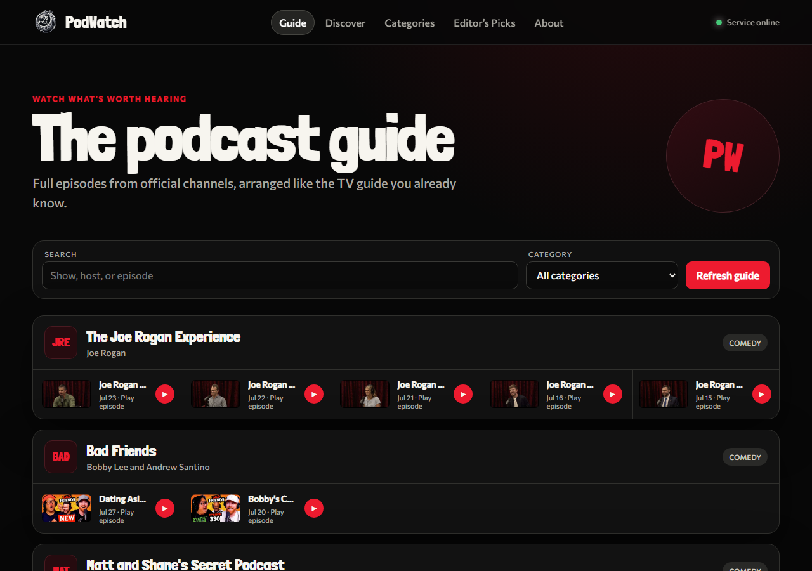

Guide-first discovery
Browse shows and episodes with a familiar TV-guide rhythm.
Beta transmission / 003
The channel-surfing feeling of television, rebuilt for the era of video podcasts.

The idea
003 / PWPodWatch gives long-form video podcasts a home that feels immediately familiar. Shows become channels. Episodes become the schedule. Search, categories, and editor’s picks make discovery feel intentional instead of endless.
The platform points viewers to full episodes from official sources. No scraped streams—just a cleaner way to find the conversations worth your time.
Browse shows and episodes with a familiar TV-guide rhythm.
Expand the catalog, discovery signals, and editorial layers.
Connect audiences with the creators and channels publishing the work.